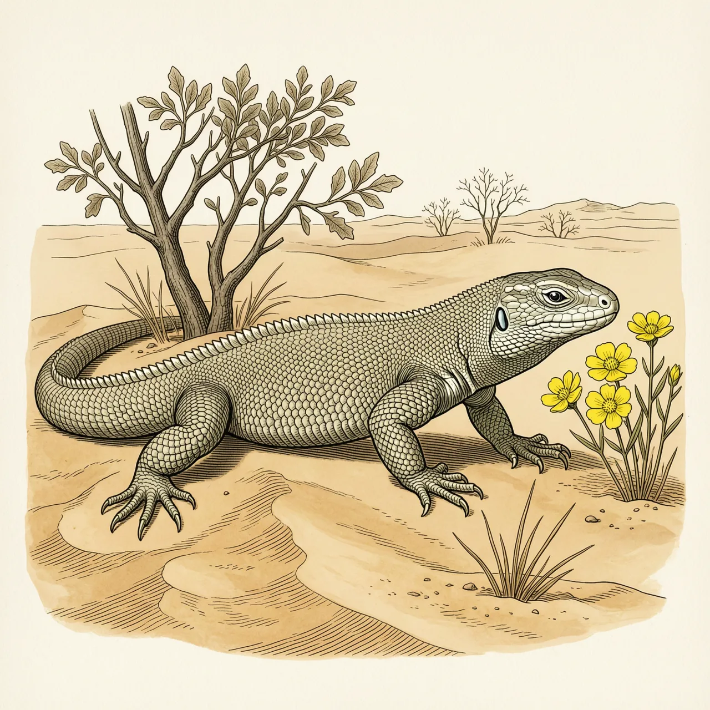
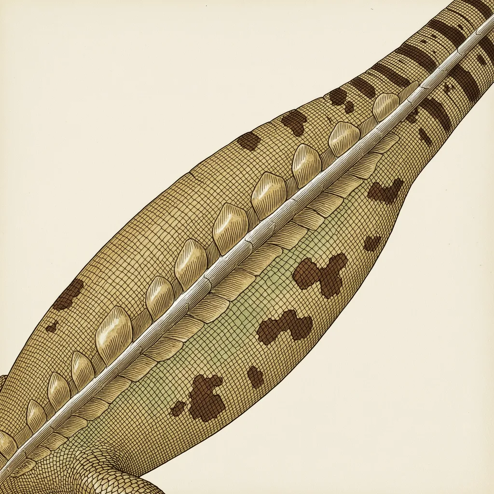

沙漠鬣蜥是分布于索诺兰沙漠和莫哈韦沙漠的中型蜥蜴，连尾巴长约41厘米。多数蜥蜴要躲避的正午高温，正是它出洞取食的时段；它以植物的芽、果实和叶子为主食，水分也几乎全部来自食物。它的属名在希腊文里意为「口渴的蜥蜴」。
一片被矮橡树遮着的沙地，就是沙漠鬣蜥的标准住址。它常见于索诺兰沙漠和莫哈韦沙漠，在加利福尼亚湾的几个岛屿上也有分布，主要栖息在海拔1000米以下、干旱而沙质的环境，偶尔也会走到岩石河床上。更靠南的种群会住进干旱的亚热带丛林和热带落叶林。它的窝一般挖在沙丘里，有时也直接用敏狐或沙漠陆龟留下的洞。
对多数蜥蜴来说，正午的荒漠热到必须退回洞中；沙漠鬣蜥却抵得住这种高温，能在一天里最热的时段到灌木丛间取食。它主要是草食性，吃植物的芽、果实和叶子，尤其容易被矮橡树的黄花吸引。饮水对它是次要的事，水分主要来自吃下去的植物。温度实在过高时，它会攀到丛林间的遮荫处躲避。
最反直觉的是它的名字。沙漠鬣蜥所属的属名来自希腊文的「口渴」和「蜥蜴」，合起来是「口渴的蜥蜴」；可它偏偏住在最缺水的荒漠里，且很少靠喝水补充水分。种小名取自拉丁文的「背部」，说的是它背上一排很大的鳞片，这些鳞片向尾巴逐渐变大，尾巴能长到身体长度的1.5倍。到了繁殖期，雄性和雌性的两侧都会变成粉红色。
